📑 Dans cette page (7 sections)
📋 Prérequis
- Python 3.11 ou plus récent (
python --version). - Git (pour la suite) : https://git-scm.com.
- Un éditeur de texte (VS Code, Bloc-notes…).
🪜 Étapes (Windows PowerShell)
%%{init: {"theme":"base","themeVariables":{"primaryColor":"#0f2130","primaryTextColor":"#e6eef5","primaryBorderColor":"#5fd0ff","lineColor":"#3d89ab","secondaryColor":"#1a0d14","tertiaryColor":"#0b1824","edgeLabelBackground":"#0f2130","fontFamily":"ui-monospace, Menlo, Consolas, monospace","noteBkgColor":"#1a0d14","noteTextColor":"#ffb4bb","actorBkg":"#0f2130","actorBorder":"#5fd0ff","actorTextColor":"#e6eef5","signalColor":"#3d89ab","signalTextColor":"#3d89ab","labelBoxBkgColor":"#0f2130","labelTextColor":"#e6eef5","loopTextColor":"#3d89ab"}}}%%
flowchart LR
A["📥 Récupérer le dossier"] --> B["🐍 python -m venv .venv"] --> C["📦 pip install -r requirements.txt"] --> D["📝 Créer le fichier .env"] --> E["▶️ python app.py"] --> F(["🌐 127.0.0.1:5000"])
class F ok
classDef cloud fill:#0f2130,stroke:#5fd0ff,color:#e6eef5
classDef ok fill:#0c241b,stroke:#5dffb0,color:#e6eef5
classDef bad fill:#241219,stroke:#ff4d5e,color:#ffb4bb
cd "C:\chemin\vers\scp_public"
python -m venv .venv
.\.venv\Scripts\Activate.ps1
python -m pip install -r requirements.txt
copy .env.example .env
Si PowerShell refuse d'activer l'environnement (« l'exécution de scripts est désactivée ») :
Set-ExecutionPolicy -Scope CurrentUser RemoteSigned
🔹 macOS / Linux
python3 -m venv .venv && source .venv/bin/activate
pip install -r requirements.txt
cp .env.example .env
🔹 Remplir .env
Voir Configuration. Minimum pour tester : FLASK_SECRET_KEY, DISCORD_CLIENT_ID, DISCORD_CLIENT_SECRET, DISCORD_REDIRECT_URI, ADMIN_DISCORD_IDS.
▶️ Lancer
📌 Important
Ouvre le site sur http://127.0.0.1:5000 et pas localhost : c'est l'adresse déclarée dans Discord, sinon la connexion échoue.
python app.py
Ouvre http://127.0.0.1:5000 (utilise exactement cette adresse, pas localhost, pour que la connexion Discord fonctionne).
🔎 Ce qui se passe au premier lancement
- Sans
DATABASE_URL, le site crée une base SQLite localescp_site.dbdans le dossier du projet. - Les tables sont créées automatiquement et 3 articles de démonstration sont ajoutés si la base est vide.
- Les médias envoyés sont stockés dans
uploads/.
🪤 Pièges fréquents sous Windows
| Problème | Solution |
|---|---|
Le fichier s'appelle .env.txt |
Active « Extensions de noms de fichiers » dans l'Explorateur et renomme en .env |
.env modifié mais sans effet |
Arrête le serveur (Ctrl+C) et relance |
Variable Windows qui écrase .env |
Remove-Item Env:DISCORD_CLIENT_ID, Env:DISCORD_CLIENT_SECRET -ErrorAction SilentlyContinue |
pip introuvable |
Utilise python -m pip ... |


⛨ SCP Foundation — projet de fan non officiel · contenus SCP sous licence CC BY-SA 3.0 lorsque applicable · ⬆ retour en haut